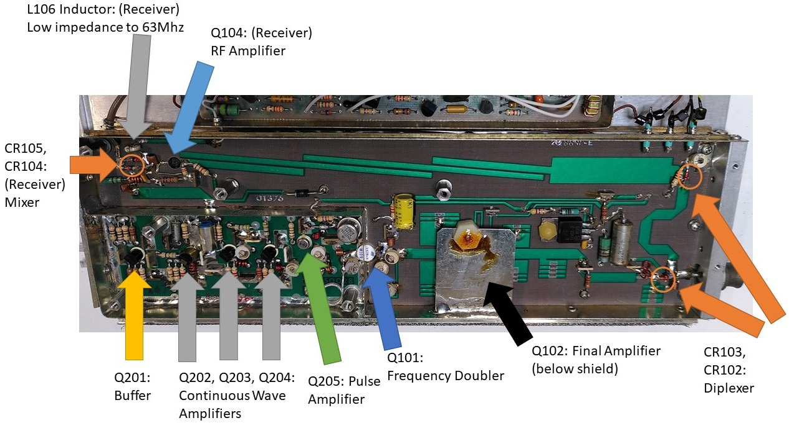

A faulty aircraft avionics Narco DME 890 came into my hands recently. As this instrument was destined for the trash bin, I was given free reign to do whatever I wanted with it. What better way to do it than to conduct a teardown!
Before commencing a teardown, I have to go through some theoretical concepts of the basic operation of this device.
What is a DME?
DME stands for “Distance Measuring Equipment”. As its name suggests, this instrument determines the distance between the aircraft and a ground station.
Its maintenance manual I found online has a a wealth of data on this. The date of this manual is December 1980 which shows that the device was designed more than 40 years ago!
If the above is too wordy for you, the basic idea is this:
- The aircraft transmits a signal at an interrogation frequency specific to a certain ground station.
- The ground station will then reply to the aircraft after a certain known delay.
- Based on the time delay between the transmitted signal and received signal, the DME equipment can calculate how far the aircraft is from the ground station and display this information to the pilot.
This distance information provided by the DME however cannot be directly interpreted as the ground distance to the station.
Source: https://www.boldmethod.com/learn-to-fly/systems/understanding-dme-on-instrument-approaches-and-vfr/
As planes operate in the 3D world, the distance is actually the slant range. Therefore the higher the altitude of the aircraft, the less accurate the slant range distance can be used to approximate the ground distance.
Boldmethod has this to say:
So how much DME slant range error is there for most aircraft operations? The rule-of-thumb is that if you’re at least 1NM away from the station for every 1,000’ AGL, slant range error is negligible.
…
DME requires line-of-sight between the aircraft and the ground station, and terrain and distance beyond the horizon will prevent DME from working.
DME Frequencies
I didn’t realise before that the frequencies that DMEs operate at is a topic that is actually more complicated than it seems.
DME operates at this frequency range:
- Interrogation frequency: 1025 - 1150 Mhz (1041 - 1150 Mhz for DME-890)
- Ground reply frequency: 962 - 1213 Mhz (978 - 1213 Mhz for DME-890)
- Channel spacing: 1Mhz
There are a total of 126 interrogation and reply channels. (Narco DME 980 however operates at a slightly smaller range hence can only use a smaller number of channels which I will come to later.)
The difference between a certain Interrogation and Ground Reply frequency is an offset of 63 Mhz apart. However, notice that the Interrogation frequency range seems to be smaller than the Ground Reply frequency range.
This is because DME operates in 2 modes X and Y. We can use this table to determine the correct Ground Reply frequency based on the Interrogation Frequency and Mode.
| Mode\Frequency (Mhz) | Interrogation Range | Offset | Reply Range |
|---|---|---|---|
| Mode X | 1025 - 1087 | -63 | 962 - 1024 |
| Mode X | 1088 - 1150 | +63 | 1151 - 1213 |
| Mode Y | 1025 - 1087 | +63 | 1088 - 1050 |
| Mode Y | 1088 - 1150 | -63 | 1025 - 1087 |
Visualising that table into graphical form:
DME ground stations are usually (but not always) co-located with Very high frequency omni-directional range (VOR) stations. To determine whether the DME is operating in X or Y mode, one will have to look up the frequency of the VOR station that the DME is co-located with.
There is a fixed mapping between the VOR and DME frequencies. A detailed table of the mappings that can be supported by the Narco DME-890 is provided in the maintenance book.
The X and Y mode can be determined based on the hundredths place of the VOR frequency.
- Ending in 0.00 Mhz: X mode
- Ending in 0.05 Mhz: Y mode
The introduction of two modes became necessary after a reduction of the VOR bandwidth by half in the 1970s. Although the VOR channel has been doubled, no additional frequency band for DME was approved. Thus, the number of DME channels was realized based on a double use of the existing frequencies by defining the X and Y grid.
Observe in the mapping table that Narco DME-890 does not support Interrogation frequencies lower than 1041 Mhz and Ground Reply frequencies lower than 978 Mhz. This is because below those DME frequencies, there are no VOR pairings for them. The Narco DME-890 only allows setting of the VOR frequency in its front panel.
DME Interrogation Process
The process goes like this:
- Plane sends one pulse pair at interrogation frequency to the DME station.
- DME station receives the pulse pair.
- DME station waits for a fixed 50us delay starting from receiving the first pulse.
- DME station replies with its pulse pair at Reply Frequency.
This is a slide of a sample pulse pair.
Source: http://iiast.com/documents/Lesson13BasicPrinciplesofDMEed.pdf
Each of the pulses have a 3.5us pulse width.
For X mode, the pulse spacing will be 12us. For Y mode, the pulse spacing will be 30us.
DME Infrastructure
In order to use a DME, co-located VOR and DME ground stations scattered around the world are set up by aviation authorities. Tactical Air Navigation (TACAN) which is the military version of the VOR allows the DME portion to be used by civil aviation.
VOR stations allows the pilot to get a bearing TO/FROM in reference with the station however it does not give distance. Therefore DME is a useful complement to the VOR as with the distance and bearing with respect to a known position of a ground station, the pilot can determine where the aircraft is.

In Singapore’s context, we have 3 VOR-DME stations in our territory as marked by the 3 large circles in the Foreflight screenshot. 2 TACAN stations are available at Tengah and Paya Lebar airbases.
VOR frequencies are shown on the map. So what about their DME frequencies?
Using the fixed VOR-DME frequency pairing in the previous section, we can derive the DME frequencies of those stations.
| Station Code | Station Name | Station Type | VOR Frequency | DME Interrogation Freq | DME Reply Freq |
|---|---|---|---|---|---|
| PU | Papa Uniform | VOR-DME | 115.10 | 1122 | 1185 |
| VTK | Tekong | VOR-DME | 116.50 | 1136 | 1199 |
| SJ | SINJON | VOR-DME | 113.50 | 1106 | 1169 |
| TNG | Tengah | TACAN | 113.90 | 1110 | 1173 |
| PLA | Paya Lebar | TACAN | 116.30 | 1134 | 1197 |
Therefore when the pilot wants to configure the Narco DME-890, he does not actually use the Interrogation/Reply frequencies directly. He uses the VOR frequencies published on the chart to enter into the DME system which will then automatically derive the correct DME frequencies to use.
For the TACAN stations, although the “VOR frequencies” are listed, a civilian VOR avionics equipment cannot get any bearing information from it. The dummy VOR frequency is for the DME system to determine the paired DME frequency to interact with the TACAN system.
DME is like a reversing of roles compared to a transponder system where instead of the ground station interrogating the aircraft, it’s the aircraft now interrogating the ground station.
Operating the DME-890
Source: Seletar Flying Club
The DME-890 is pretty straightforward to use. The pilot sets the “VOR frequency” into the system by rotating the knob on the right. The slant range is then displayed to the pilot on the left.
In this example, the DME-890 is tuned to 116.30 Mhz which is the pseodo-VOR frequency for the Paya Lebar TACAN. The distance of 5.1 NM is displayed to the pilot.
Test Powering the DME-890 from outside the aircraft
Just like what I did for the Bendix-King KX-155 teardown, I decided to document how to power up the radio externally as this can be useful for maintenance purposes.
Looking up the relevant page of the maintenance manual:
According to the manual, 14 - 28VDC has to be applied to pins 9 and K. Ground is on 10 and L.
Translating to the actual physical pinout.
The Teardown
Let’s come to the fun part, analysing the key components.
System Architecture

Consulting the manual, the block diagram shows everything controlled by a central microprocessor.
Starting the Teardown
With a screw driver, I proceeded to remove the top cover.

The RF portion is clearly in a separate shielded section away from the main PCB. The plenty of through-hole components is also another indication of the age of this design.
Microcontroller
With the processor literally in front, I decided to google that part number MK3870/42.
Going to CPU-world’s website and eliminating the options, this is likely a Mostek MK3870/42N-10 or MK3870/42N-15 from the Mostek 3870 family. The only difference between the two is that the MK3870/42N-15 5V supply voltage tolerance is 5% vs MK3870/42N-10 being 10%.
MCU specifications:
- 8 bit MCU
- 4 Mhz
- 4032 bytes ROM
- 64 bytes scratchpad + 64 bytes executable RAM
- Release date: ~1977
Today, this would seem like very limited resources but I guess it was plenty in that era.
With its write-once ROM, it means the firmware on this chip cannot be replaced.
Mostek also produced MK38P70 - development version of the 3870 MCU that supported external EPROM chip.
The ST logo on the chip hints at the industry consolidation of that era based on Mostek Wikipedia article where after a series of sell-offs and mergers, came to be owned by ST.
Today, the usage of programmable microcontrollers in electronics products is pretty much taken for granted.
However I guess at that time, usage of such chips is still a relatively new implementation that necessitates that Narco write in the maintenance manual not to quickly blame the MCU when things are not working.
Display
Just like my KX-155 teardown, the display portion intrigued me.
A look after removing the front bezel. The separation between each digit is clearly observed.
This short video of the display also hints that the digit segments are not updated all at once. To the naked eye, all the digits seem to appear normally but the camera’s frame rate differs from digits’ refresh rate hence the alternate flickering.
The very bright segments even in direct sunlight is also indicative of a gas discharge display.
In the manual, each digit is given its own number when referred to in the rest of the text.
The explanation of this alternate flickering is given in this section. Digits are refreshed in the sequence of 0, 3, 6, 1, 4, 7, 2, 5 instead of a consecutive order to avoid a possibly human detectable ripple effect. It’s also clear that the gas discharge displays operate at voltages of -100VDC and +100VDC which is not possible for the MCU to directly handle.
Thanks to this schematic, I have a basic high-level understanding how this works.
The manual’s BOM page on which components on the PCB corresponds to the schematic was in poor condition so I had to do some guesswork by googling the part numbers.
| Manufacturer | Part Number | Designator | Position and Orientation | Description |
|---|---|---|---|---|
| RCA | CD4051BE | U317 | Right, Vertical | 3:8 Multiplexer Switch. Using 3 input lines connected to the controller, determine which of 8 digits is being controlled at any one time. TI still makes a version of this chip with this part number! |
| Allegro | UDQ6118A-1 | U315 | Bottom, Horizontal | +100VDC Display Driver. Provides a common Anode for all the Digits and Legends. |
| Allegro | UDN7180A | U318, U319 | Top, Vertical | -100VDC Display driver. One IC controls the 8-segment digit. Another IC controls the Legends: which are RNV, NM, Decimal, RMT, XT, MHZ, Decimal, MIN. |
The method employed by DME-890 to programmatically select each digit directly is different from how the KX155 does it where the MCU advances the digit selection based on a transition of a clock signal to the multiplexer.
RF Section
Now comes the most complex section. The manual goes into tremendous and oftentimes cryptic details especially for someone like me who is not in the avionics and RF industry.
Therefore I shall only mention the transmit and receive portions only. There is also a modulator and signal decoding section but I shall leave that out in the interest of brevity.
The top portion is the receiver portion while the bottom is the transmitter + diplexer portion. The diplexer allows the antenna to be used by both the transmitter or receiver with both signals isolated from each other.
Transmitter
I first started out by consulting the provided block diagram.
With the help of this diagram and the component placement diagram, I tried to identify the key components.
Major components on the board that correspond to the the block diagram for reference.
The MCU-controlled RF synthesizer provides a +3 dbm signal from 520.5 to 575 Mhz which is half the transmitter frequency range.
-
Exciter: Using a series of continuous-wave amplifiers and a final pulse amplifier, pulsed RF power at half interrogation frequency (520.5 to 575 Mhz) is sent to the transmitter section.
-
Transmitter: Frequency doubler doubles the 520.5 to 575 Mhz input to the interrogation frequency, amplified further then sent out through the diplexer.
Receiver
With the help of this diagram and the component placement diagram, I tried to identify the key components.
Major components on the board that correspond to the the block diagram for reference.
Q104 (in transmitter photo): Amplifies the RF signal by 8dB in the 978 Mhz to 1213 Mhz range
After Q104, the RF signal has to be converted to a lower frequency (63Mhz in this case) to ease the processing in the subsequent receiver section.
This is done with CR104 and CR105 (in transmitter photo) where I shall quote the manual:
Mixing occurs in diodes CR104 and CR105 where the LO (Local Oscillator) (which is 1/2 frequency of transmitter) and Receiver RF Signals are heterodyned, the 2nd Harmonic of the LO with the received frequency provides a difference frequency of 63Mhz. The inductor L106 is a low impedance to 63 Mhz and passes this signal to the IF Amplifier, however, its impedance to higher frequencies effectively isolates them from the IF Amplifier.
This is making use of the property that the received frequency is exactly 63 Mhz away from the transmit frequency.
2nd Harmonic of half the transmitter frequency is back at the transmitter frequency. Mixing the transmit frequency and the received frequency will produce another frequency at 63Mhz where the L106 inductor will filter everything else away.
-
Q706 - Q710: Amplifies the 63Mhz IF signal as the inductor output is quite weak at this point
-
Video detector section: R702 and C702 form a RC-circuit. Together with the CR701 diode, serves to detect the 3.5us pulse pair. I’m unsure why they call it “video” though. Quoting the manual:
-
Q703 Video Amplifier: Amplifies the video signal by a gain of 200 to 1Vpp.
-
Q704, Q705 Logic Driver: Converts the Video Amplifier output to a logic level that is acceptable to the decoder.
-
Q701, Q702 Sample and Hold Automatic Gain Control (AGC): These components ensure that the pulses that are received at the decoder have uniform amplitudes. Based on the output signal from the video section, the AGC voltage is applied to the IF Signal amplifiers Q706-Q710 to adjust the amount of amplification done.
-
U313 (not in photo) is an AND gate to allow the decoder to give feedback to the AGC on whether to act on certain signal based on the received pulse spacing.
Final Words
Quite a lot of thought went into a DME infrastructure as a whole. Something supposedly simple to use as the DME actually has a lot going on behind the scenes to make it work.
The frequencies that are chosen in the system are clearly not selected on a whim. The entire system was designed with the avionics implementation on the aircraft in mind too.
It’s clear that RF and avionics design work is an extremely complex task. The manufacturer has to design a product that fits the functional requirements, conform to rigorous aviation certification standards and also be robust enough to work in the rough environment of the plane under heavy vibrations and heat.
Such a product definitely took a non-trivial amount of time and skill-sets of a team of people to develop. Furthermore, this was developed in the late 1970s without the benefit of modern tools and easily accessible knowledge of today.
Now my next curiosity, how does a contemporary implementation of an avionics DME system work with the benefit of better tech like faster processors and more integrated surface mount technology?
Online presentation I gave of this topic at Hackware.


{kind=link}
{kind=link}
{kind=link}
{kind=link}
{kind=link}
{kind=link}
{kind=link}
{kind=link}
{kind=link}
{kind=link}
{kind=link}
{kind=link}
{kind=link}
{kind=link}
{kind=link}
{kind=link}
{kind=link}
{kind=link}
{kind=link}
{kind=link}
{kind=link}